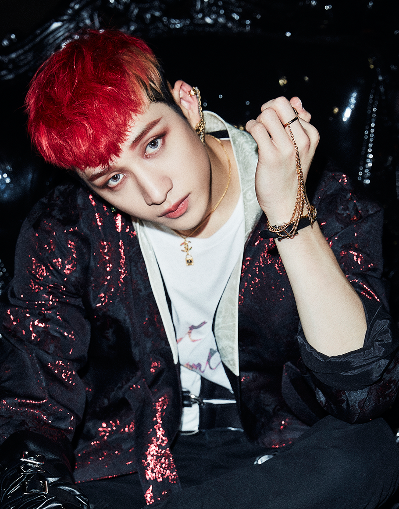

УЧАСТНИКИ

БАН ЧАН
03.10.1997
Лидер, главный композитор, певец, танцор, репер

ЛИ МИНХО
25.10.1998
Главный танцор, вокалист, репер

СО ЧАНБИН
11.08.1999
Главный репер, вокалист, продюсер
ХВАН ХЕНДЖИН
20.03.2000
Главный танцор, репер, вокалист, вижуал

ХАН ДЖИСОН
14.09.2000
Главный репер, вокалист, продюсер

ЛИ ФЕЛИКС
15.09.2000
Танцор, репер, вокалист

КИМ СЫНМИН
22.09.2000
Главный вокалист, танцор, вижуал
ЯН ЧОНИН
08.02.2001
Вокалист, танцор, младший